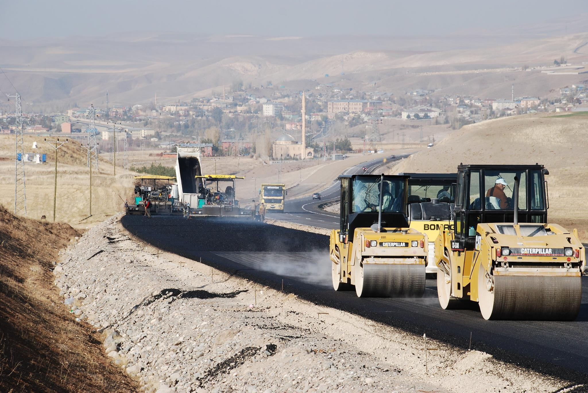
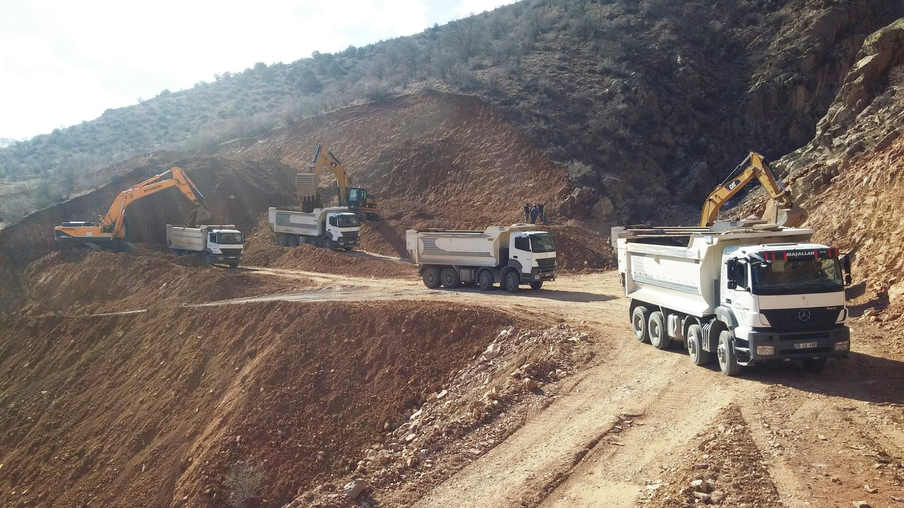
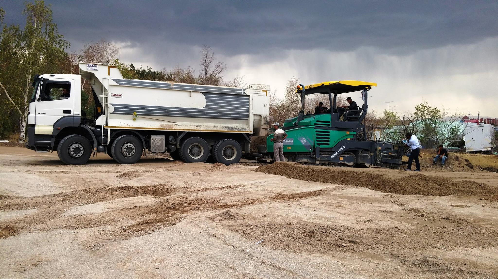
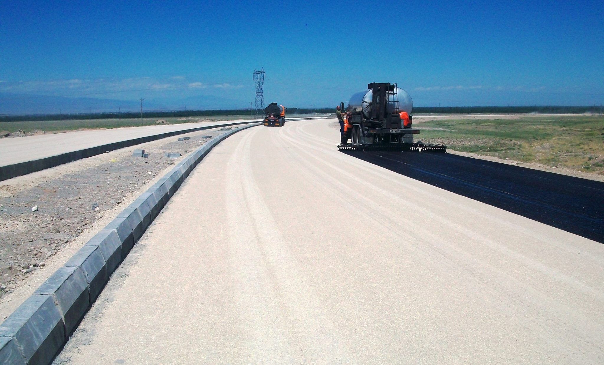

Öne Çıkan Projelerimiz
Erzurum'da başarıyla tamamladığımız projelerimizden bazıları

ÖZBAĞ Tüneli Projesi
İspir-Rize il sınırı yolu kapsamında inşa edilen 593 metrelik Özbağ-1 ve 332 metrelik Özbağ-2 tünellerinin hafriyat, beton kaplama ve altyapı çalışmaları ME-KA İnşaat tarafından başarıyla tamamlanmıştır. 1441 metre uzunluğunda 3 tünel ve Özbağ Köprüsü ile bölge ulaşımına değer katılmıştır.

Aşkale - Erzurum-Erzincan Karayolu
Erzurum-Erzincan karayolu Aşkale-Tercan arası yol yapım işi kapsamında, Deliktaş mevkiinde fazla tahribat yapılmadan tasarlanmış yol çalışması. Aşkale Çevre Yolu Köprüleri dahil olmak üzere Tercan Kavşak Köprüsü, Doğu Kavşağı Köprüsü ve Karasu Köprüleri'nin altyapı ve üstyapı çalışmaları tamamlanmıştır.

Hafriyat ve Zemin Hazırlık Projesi
Erzurum genelinde birçok projede hafriyat, kazı ve zemin düzenleme işlemlerini başarıyla tamamladık. Modern ekskavatör, loder ve kamyon filomuzla temel kazısı, dolgu, hafriyat nakliyesi ve zemin iyileştirme çalışmalarında profesyonel çözümler sunduk. Erzurum'un zorlu arazi koşullarında dahi yüksek performansla çalışarak projeleri zamanında teslim ettik.

Erzurum Yol ve Altyapı Çalışmaları
Şehir içi ulaşımı geliştirmek amacıyla gerçekleştirilen yol yapım ve altyapı projelerinde profesyonel ekip ve modern ekipmanlarımızla hizmet verdik. Erzurum'da 620 km'ye ulaşan bölünmüş yol ağına katkı sağlayan projelerde bitümlü sıcak karışım (BSK) kaplama, sathi kaplama, oto korkuluk ve trafik işaretleme çalışmalarını başarıyla tamamladık.

Beton ve Agrega Tedarik Projesi
İnşaat projeleri için yüksek kaliteli beton ve agrega tedariki sağlayarak güçlü yapıların temelini oluşturduk. C20'den C50'ye kadar tüm beton sınıflarında, kum, çakıl, mıcır ve taş tozu gibi agregalarda Erzurum geneline kesintisiz sevkiyat gerçekleştirdik. Laboratuvar testli, TS standartlarına uygun malzemelerimizle projelere değer kattık.

Iğdır Yol Yapımı Projesi
Iğdır ili sınırları içerisinde gerçekleştirilen 25 km'lik bölünmüş yol projesinde kazı, dolgu, agrega temini ve asfaltlama işleri ME-KA İnşaat tarafından başarıyla teslim edilmiştir. Bölge ulaşımını rahatlatan bu önemli projede, zorlu iklim koşullarına rağmen zamanında ve kaliteli iş teslimi yapılmıştır.
Projelerimiz gibi güçlü işler için bizimle iletişime geçin
Siz de projenizi hayata geçirmek istiyorsanız hemen teklif alın